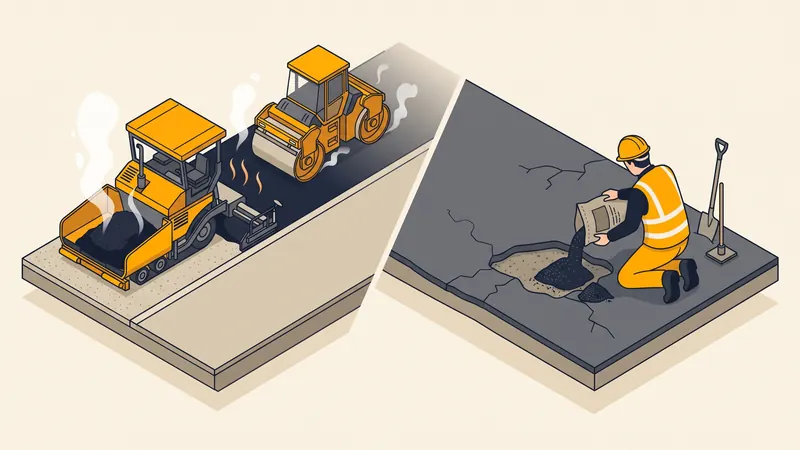

Enrobé à Chaud vs à Froid : Différences, Prix & Usages en 2026
Vous hésitez entre enrobé à chaud et enrobé à froid pour votre allée, votre parking ou vos travaux de voirie ? Ces deux produits, bien que similaires en apparence, présentent des caractéristiques techniques, une durabilité et des usages très différents. Ce comparatif détaillé vous aide à faire le bon choix pour votre projet à Aix-en-Provence et en PACA.

Comparatif enrobé à chaud vs enrobé à froid
| Critère | Enrobé à chaud | Enrobé à froid |
|---|---|---|
| Fabrication | En centrale d'enrobage à 150-180 °C | Mélange prêt à l'emploi, température ambiante |
| Composition | Granulats + bitume chaud (5-6 %) | Granulats + émulsion de bitume ou bitume fluxé |
| Durabilité | 15 à 25 ans | 5 à 10 ans |
| Résistance mécanique | Excellente (trafic lourd) | Moyenne (trafic léger) |
| Étanchéité | Très bonne | Moyenne |
| Mise en oeuvre | Finisseur + rouleau compacteur | Manuelle ou petit outillage |
| Surface minimale | 50 m² (seuil de rentabilité) | Aucun minimum |
| Conditions de pose | T° > 5 °C, sol sec | Toute saison, même humide |
| Praticable après | 24 à 48 h (véhicules) | Immédiatement (piétons), 24h (véhicules) |
| Prix au m² | 25 - 45 €/m² (5 cm) | 10 - 20 €/m² (3 cm) |
| Aspect esthétique | Noir uniforme, lisse | Plus granuleux, moins régulier |

L'enrobé à chaud en détail
Fabrication et composition
L'enrobé à chaud (ou béton bitumineux) est fabriqué dans une centrale d'enrobage où les granulats sont chauffés à 150-180 °C puis mélangés avec du bitume pur. Ce processus industriel garantit une qualité constante et une parfaite enrobage des granulats. L'enrobé est ensuite transporté sur le chantier en camions benne bâchés pour maintenir sa température.
Types d'enrobé à chaud
- BBSG (Béton Bitumineux Semi-Grenu) : le plus courant pour allées et parkings, granulométrie 0/10 ou 0/14
- BBM (Béton Bitumineux Mince) : couche de roulement fine, réfection de chaussées
- BBTM (Béton Bitumineux Très Mince) : couche d'usure pour routes à fort trafic
- GB (Grave Bitume) : couche de base épaisse pour fondation routière
- Enrobé rouge ou coloré : enrobé à chaud avec pigments, pour allées esthétiques (surcoût de 30 à 50 %)
Mise en oeuvre
La pose d'enrobé à chaud nécessite un équipement professionnel :
- Préparation du support : nettoyage, terrassement et compactage de la couche de base
- Couche d'accrochage : pulvérisation d'émulsion de bitume (ECR 65)
- Épandage : mise en oeuvre au finisseur (machine à coffrage glissant) pour une épaisseur régulière
- Compactage : passage du rouleau vibrant (tandem ou mixte) pour atteindre la densité requise
- Séchage : attente de 24 à 48 h avant circulation de véhicules
L'enrobé à froid en détail
Fabrication et composition
L'enrobé à froid est un mélange de granulats et d'émulsion de bitume (ou de bitume fluxé avec un solvant) qui peut être mis en oeuvre à température ambiante. Il est disponible en sacs de 25 kg dans les grandes surfaces de bricolage ou en vrac chez les négociants en matériaux.
Avantages de l'enrobé à froid
- Facilité de mise en oeuvre : pas besoin de finisseur ni d'équipement spécialisé
- Disponibilité : en sacs prêts à l'emploi, stockable longtemps
- Utilisation en toute saison : même par temps froid ou humide
- Idéal pour les petites surfaces : pas de quantité minimale de commande
- Prix unitaire inférieur : moins cher au m² que l'enrobé à chaud
Limites de l'enrobé à froid
- Durabilité limitée : 5 à 10 ans contre 15 à 25 ans pour l'enrobé à chaud
- Résistance mécanique faible : ne supporte pas le trafic lourd ou régulier
- Aspect moins esthétique : surface granuleuse, joints visibles
- Perméabilité : moins étanche, risque d'infiltrations d'eau
- Coût à long terme supérieur : refaire tous les 5-10 ans revient plus cher que poser de l'enrobé à chaud une fois
Quel enrobé choisir selon votre projet ?
| Projet | Enrobé recommandé | Justification |
|---|---|---|
| Allée de garage | Enrobé à chaud (5-6 cm) | Résistance aux véhicules, durabilité 20 ans |
| Parking résidentiel | Enrobé à chaud (6-8 cm) | Trafic régulier, esthétique |
| Chemin piéton / Allée de jardin | Enrobé à froid ou à chaud | Trafic léger, l'un ou l'autre convient |
| Réparation de nid-de-poule | Enrobé à froid | Intervention rapide, petite surface |
| Rustine temporaire | Enrobé à froid | Solution d'attente avant réfection complète |
| Voie communale / Route | Enrobé à chaud (8-12 cm) | Obligatoire pour le trafic routier |
| Cour de ferme / Chemin rural | Enrobé à chaud | Passage d'engins agricoles lourds |
Prix comparatif détaillé
| Poste | Enrobé à chaud | Enrobé à froid |
|---|---|---|
| Fourniture (tonne) | 80 - 120 €/t | 150 - 250 €/t (en sacs) |
| Pose au m² (5 cm) | 25 - 45 €/m² | 10 - 20 €/m² |
| Préparation du sol | 15 - 30 €/m² | 5 - 15 €/m² |
| Coût total (50 m² allée) | 2 000 - 3 750 € | 750 - 1 750 € |
| Coût sur 20 ans (50 m²) | 2 000 - 3 750 € (1 pose) | 2 250 - 5 250 € (3 poses) |
Comme le montre ce tableau, l'enrobé à chaud est plus économique sur le long terme malgré un investissement initial supérieur. Pour en savoir plus sur les tarifs, consultez notre guide Prix enrobé au m² en 2026.
Considérations pour la région PACA
Le climat méditerranéen d'Aix-en-Provence et de la Provence influence le choix et la pose de l'enrobé :
- Chaleur estivale : les températures supérieures à 35 °C peuvent ramollir l'enrobé à chaud fraîchement posé. Évitez la circulation immédiate et préférez les poses matinales en été.
- UV intenses : le soleil provençal accélère le vieillissement du bitume (oxydation, grisonnement). L'enrobé à chaud résiste mieux grâce à son liant plus dense.
- Pluies méditerranéennes : les épisodes cévenols peuvent être violents. L'étanchéité supérieure de l'enrobé à chaud protège mieux la couche de base.
- Absence de gel prolongé : avantage majeur en PACA, les cycles gel-dégel destructeurs sont rares, ce qui favorise la longévité de l'enrobé.
L'épaisseur recommandée selon le type d'enrobé
L'épaisseur d'enrobé est un facteur déterminant pour la durabilité de votre revêtement :
- Enrobé à chaud : minimum 5 cm pour un garage, 3 cm pour un trottoir, 8 cm pour un parking poids lourds
- Enrobé à froid : 2 à 4 cm maximum, au-delà l'enrobé à froid ne compacte pas correctement
Besoin d'un Devis Enrobé ?
STP Terrassement réalise la préparation et la pose d'enrobé à chaud pour vos allées, parkings et cours à Aix-en-Provence et en PACA.
Demandez votre devis gratuitFAQ : Vos questions sur l'enrobé à chaud et à froid
Quelle est la différence entre enrobé à chaud et à froid ?
L'enrobé à chaud est fabriqué en centrale à 150-180 °C et offre une durabilité de 15 à 25 ans. L'enrobé à froid est un mélange prêt à l'emploi à température ambiante, avec une durée de vie de 5 à 10 ans, idéal pour les petites réparations.
Quel est le prix de l'enrobé à chaud au m² ?
L'enrobé à chaud coûte entre 25 et 45 €/m² fourni et posé pour une épaisseur de 5-6 cm en 2026. Les grandes surfaces bénéficient de tarifs dégressifs.
L'enrobé à froid est-il une bonne solution pour une allée ?
Non, l'enrobé à froid n'est pas recommandé pour une allée de garage. Il manque de résistance mécanique et se dégrade rapidement sous le trafic automobile. Préférez l'enrobé à chaud pour une allée durable.
Peut-on poser de l'enrobé à chaud en hiver ?
Oui, à condition que la température soit supérieure à 5 °C et que le sol soit sec. En région PACA, les hivers doux permettent souvent la pose de novembre à mars.